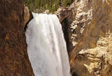
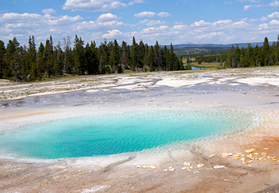
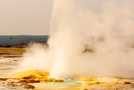
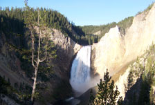
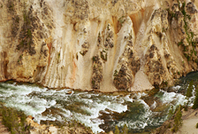
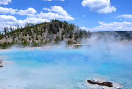
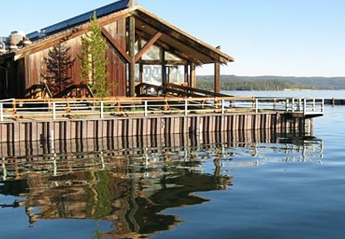
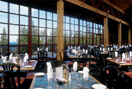

01
更多线路>>
洛杉矶出发
- 黄石公园-旧金山-玻璃桥-包伟湖-优胜美地十日游

- 出团日期:(2013/4/24-2013/10/2)周三/五/六
- $429.00起
- 推荐理由：从天使之城洛杉矶出发，去赌城拉斯小试身手。乘船游览包伟湖，穿越红石峡谷，在8000尺高的布莱斯峡谷看异石嶙峋。步入大提顿国家公园，千年冰河如入人间仙境。还有整日的黄石公园深度游，令人惊叹的西峡谷之行，以及旧金山、洛杉矶、斯坦福大学、优胜美地、赫氏古堡等名城名景，所有的精彩，尽在行程安排之内！

- 黄石公园-香岩城-总统巨石-六日游
- (2013/4/24-2013/10/2)周二/三/五/六
- 去看看$294.00起

- 黄石公园-包伟湖-西峡谷七日经典游
- (2013/4/24-2013/10/2)周二/三/五/六
- 去看看$306.00起

- 黄石公园-西峡谷-总统巨石-拱门八日游
- (2013/4/24-2013/10/2)周二/三/五/六
- 去看看$329.00起
- 
- 黄石公园-拱门-总统巨石-十日游
- 出团日期:(2013/4/24-10/2)周三/五/六
- 去看看$429.00起
02
更多线路>>
拉斯维加斯出发
- 黄石公园-总统巨石-西峡谷-好莱坞十二日深度游 
- 出团日期:(2013/4/24-2013/10/2)周二/三/五/六
- $558.00起
- 推荐理由：最完美的行程，一游览尽西部名城名景。以最放松的姿态，开始美西三城深度游，周边景区一个也不错过。登上天空步道玻璃桥，360度无死角探秘举世闻名的科罗拉多大峡谷。还有梦寐以求的黄石公园，名牌工厂直销购物中心超值采购，拱门国家公园、香岩城、疯马巨石、总统巨石、大提顿国家公园、盐湖城摩门教大教堂等景区风光，美景不断，让您叹为观止！

- 黄石公园-香岩城-总统巨石六日游
- 出团日:(2013/4/24/-10/2)周二/三/五/六
- 去看看$294.00起

- 黄石公园-拱门-总统巨石七日游
- 出团日:(2013/4/24-10/2)周二/三/五/六
- 去看看$306.00起

- 黄石公园-总统巨石-西峡谷-拱门八日游
- 出团日:(2013/4/24-10/2)周二/三/五/六
- 去看看$329.00起

- 黄石公园-包伟湖-玻璃桥十日游
- 出团日期:(2013/4/24-10/2)周三/五/六
- 去看看$429.00起
03
更多线路>>
盐湖城出发
- 黄石公园,拉斯维加斯,盐湖城,西峡谷六日游

- 出发日期:(2013/4/25-2013/10/3)周日/周三/周四/周六
- $294.00起
- 推荐理由：在最短的时间内，将美西精华景点尽收眼底。繁忙中给自己放个小假，远离尘嚣，从怀俄明首府盐湖城出发，亲临梦幻黄石公园，老忠实喷泉、七彩湖、黄石瀑布，以及总统巨石、国家拱门、宾汉铜矿等众多美景等你去倾情见证。还有壮观的大峡谷风光，坐上直升飞机，从天空到山谷，尽享大自然奇景。行程结束，再血拼一次购物天堂，美景美物，一个也不错过！

- 黄石公园-大提顿国家公园四日游
- 出发日:(2013/4/25-10/3)周日/三/四/六
- 去看看$259.00起

- 黄石公园-西峡谷-盐湖城六日游
- 出发日期:(2013/5/16--10/6)周四/周日
- 去看看$301.00起

- 黄石公园-盐湖城-总统巨石六日游
- 出发日期:(2013/5/4-2013/10/12)周六
- 去看看$468.00起
- 
- 黄石公园-盐湖城-太浩湖八日游
- 出团日期:(2013/5/4-2013/10/12)周六
- 去看看$658.00起
04
更多线路>>
丹佛出发
- 黄石公园-盐湖城-拱门-总统巨石六日游

- 出团日期:(2013/4/24-2013/10/2)周二/周三/周五/周六
- $281.00起
- 推荐理由：在纯自然的风光里，感受美国西域风情。直飞丹佛，在西部的硬朗和苍茫中，步入著名摇滚音乐现场红石公园。造访西部牛仔聚集地香岩城，参观印第安民族英雄馆 ，站在全球最大雕像疯马巨石前，感受印第安人追求自由的决心，感叹总统巨石背后的历史。走进黄石公园，享受纯自然风光。沿着蛇河河谷，进入大提顿国家公园。在天然温泉区葛兰木泡温泉，舒缓中美美的享受一把。

- 黄石公园-丹佛-总统巨石五日游
- 出团日:(2013/4/24-10/2)周二/三/五/六
- 去看看$264.00起

- 黄石公园-盐湖城-拱门-总统巨石六日游
- (13/4/24-10/2)周二/周三/周五/周六
- 去看看$306.00起

- 黄石公园-盐湖城-总统巨石-大提顿国家公园五日轻松游(入住黄石公园)
- 出团日期:(2013/5/12日-9/22)周日
- 去看看$296.00起

- 黄石公园-拉斯维加斯-总统巨石-大提顿国家公园六日豪华游(入住黄石公园)
- 出团日期:(2013/5/12日-9/22)周日
- 去看看$329.00起
05
更多线路>>
旧金山出发
- 黄石公园-旧金山-总统巨石-拱门-斯坦福十日超值游

- 出团日期:(2013/4/24-2013/9/28)周三/周六
- $469.00起
- 推荐理由：邂逅西部城市风情，体味别具特色的热带风光。大巴从城市穿过峡谷，在梦和现实间来回穿梭，旅程中体验别样生活。最美城市旧金山出发，在斯坦福大学感受名校风采，在优胜美地幽静的风光中聆听心灵的呼唤，穿越拉斯大道的繁华，于红岩公园听摇滚、总统巨石留合影、黄石园内住木屋、拱门公园近距离等等，还有超低折扣的名牌购物，让您满载而归。
- 
- 黄石公园-旧金山-包伟湖-西峡谷十日游
- 出团日期:(2013/4/24-9/28)周三/六
- 去看看$469.00起

- 黄石公园-西峡谷十一日超值深度游
- 出团日期:(2013/4/24-9/28)周三/六
- 去看看$486.00起
- 
- 黄石公园-西峡谷-拱门-迪士尼十二日游
- 出团日期:(2013/4/24-9/28)周一/五/六
- 去看看$605.00起
- 
- 黄石公园-大峡谷-布莱斯峡谷八日游
- (13/5/4-10/11)周六;(13/6/18-8/13)周二
- 去看看$658.00起
06
更多线路>>
独享黄石木屋
- 黄石公园-布莱斯峡谷七日超值游(入住黄石湖木屋)
- 出团日期:(2013/6/26-2013/10/2)周三/六
- $319.00起
- 推荐理由：走四方旅游网现推出黄石湖畔小木屋度假轻松之旅，九分美景，一分心情，十分惬意，是黄石湖木屋（Grant Village）为您带来的独特体验。放松心情，倚坐在小木屋窗前，鼻尖是木头的清香，指尖划过从黄石湖边吹来的清风，目光所及则是粼粼波光，光景如是，却是人间不可多得的美景。

- 黄石公园-拉斯维加斯-包伟湖-布莱斯峡谷-大峡谷七日超值游(入住黄石湖木屋)
- 出团日期:(2013/6/26-2013/10/2)周三/六
- 去看看$319.00起
- 
- 黄石公园-大提顿国家公园-圣塔芭芭拉-优胜美地十日豪华游(入住黄石湖木屋)
- 出团日期:(2013/6/29-2013/9/28)周六
- 去看看$451.00起

- 黄石公园-包伟湖-布莱斯峡谷-西峡谷-优胜美地十日豪华游(入住黄石湖木屋)
- 出团日期:(2013/6/29-2013/9/28)周六
- 去看看$451.00起

- 旧金山,优胜美地,黄石公园,拉斯维加斯,西峡谷十日精彩游(入住黄石湖木屋)
- 出团日期:(2013/6/23-9/29)周日
- 去看看$481.00起
07
活动细则
1、该优惠只针对黄石线路；
2、凡黄石行程总金额超过$1000，送现金折扣$25；凡黄石行程总金额超过$2000，送现金折扣$50；凡黄石行程总金额超过$3000，送现金折扣$75；凡黄石行程总金额超过$5000，最高送至$100；
3、该活动不支持美金信用卡及paypal，不赠送积分，不与其他优惠叠加，只支持旅游团号为217、209及235的线路 ；
4、活动截止时间：2013年7月16日-2013年8月16日。
2、凡黄石行程总金额超过$1000，送现金折扣$25；凡黄石行程总金额超过$2000，送现金折扣$50；凡黄石行程总金额超过$3000，送现金折扣$75；凡黄石行程总金额超过$5000，最高送至$100；
3、该活动不支持美金信用卡及paypal，不赠送积分，不与其他优惠叠加，只支持旅游团号为217、209及235的线路 ；
4、活动截止时间：2013年7月16日-2013年8月16日。
08
黄石国家公园介绍
黄石国家公园（Yellowstone National Park），简称黄石公园，是世界第一座国家公园，成立于1872年。黄石公园位于美国中西部怀俄明州的西北角，并向西北方向延伸到爱达荷州和蒙大拿州，面积达7988平方公里。这片地区原本是印地安人的圣地，它在1978年被列为世界自然遗产。现是美国旅游的圣地，很受旅游爱好者的喜欢。黄石国家公园自然景点分为五大区，即玛默区、罗斯福区、峡谷区、间歇泉区和湖泊区。
黄石公园旅游看点：
地热奇观：西北的马默斯温泉区以石灰石台阶为主，故也称热台阶区；东北为罗斯福区，仍保留着老西部景观；中间为峡谷区，可观赏黄石大峡谷和瀑布；东南为黄石湖区，主要是湖光山色；西及西南为间歇喷泉区，遍布间歇喷泉、温泉、蒸气、热水潭、泥地和喷气孔。
地热奇观代表性景点：“狮群喷泉”、 “蓝宝石喷泉”、 “老忠实泉”“大��镜温泉”
动物生态： 黄石公园有七种有蹄类动物，如有美洲野牛（bison），驼鹿（moose, elk），叉角羚（pronghorn）等等，有两种熊，黑熊与棕熊、67种哺乳动物、鸟类有300多种，当然，还有大灰狼也是生活在黄石公园非常著名的动物。
附近著名美国旅游城市：洛杉矶、盐湖城、丹佛、拉斯维加斯等多个著名城市靠近美国黄石国家公园，因此前去黄石公园旅游可以同时选择在旅途进行相关城市著名景点的参观，让你的美国之旅更加圆满和充实
黄石公园开放时间： 除11/11(退伍军人日)和11/27(感恩节)外,基本上美国黄石公园全年开放的. 除了北部和东北部出入口，其他入口在每年的11份��冬季清理道路及3月底到4月初��夏季清理道路的时间都将关闭。在冬季公园内部道路只开放给雪地车。
黄石公园最适合旅游的季节：夏季
黄石公园的气候：夏季白天气温达约25摄氏度，在有些低地带会达到30度。平时晚上都很凉爽，但是高地带有时会下降到零度以下，而且，伴随着暴风雨的江风也会常常不期而至。 冬季白天气温达约在零下20到零下5度之间。最低气温记录为零下54度。降雪量很大，平均为150英尺。另外，前去黄石旅游的驴友还需注意白天黑夜的温差变化，做好相关应对准备。
黄石公园旅游注意事项 ：
温泉：不可以在温泉里游泳。来此旅游的游客必须在安全的地方观赏温泉。有的温泉里含有一些物质有可能会划伤皮肤或造成感染，有的温泉水温超过沸腾温度，如果贸然接近会对皮肤造成严重损伤。
野生动物：不可以接近或者喂野生动物食物。不能给野生动物拍照。不要接近野生动物。要按照公园要求与野生动物保持距离。
枯树：黄石公园里有一些枯树，是1988年火灾时遗留下来的。有的树枝会落下砸到游人，所以在路上走的时候一定要小心。如果要在公园里野营或者聚餐，不要选长着很多枯树的地方。